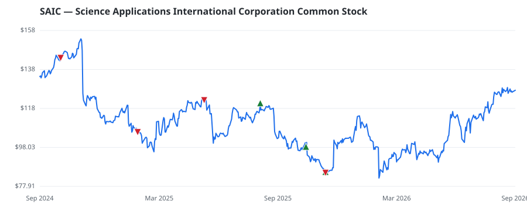

bullish · bearish · n/a — dots: price>SMA10 · SMA10>SMA50 · SMA50>SMA200 · up>down volume (20d)
Software & Services · mid cap
Members who bought SAIC earned a dollar-weighted -14.2% from their disclosure dates, versus +0.3% for the S&P 500 over the same holding windows (-14.5% alpha).

▲ green = a disclosed purchase · ▼ red = a disclosed sale (plotted on disclosure date)
Science Applications International Corp provides technical, engineering, and enterprise IT services mainly to the U.S. government. Specifically, it offers end-to-end solutions spanning the design, development, integration, deployment, management, operations, sustainment, and security of the customer's entire IT infrastructure. The company has two reportable segments, which include Defense and Intelligence and the Civilian segment. Maximum revenue is generated from its Defense and Intelligence segment, which provides a diverse portfolio of national security solutions to the DoW and the Intellig SERVICES-COMPUTER INTEGRATED SYSTEMS DESIGN · website
| Revenue | $7.3B | Net income | $358.0M |
|---|---|---|---|
| Operating income | $521.0M | Diluted EPS | $7.70 |
| Assets | $5.4B | Equity | $1.5B |
| Member | Chamber | Out-performer | Disclosed buys $ | Return on buys |
|---|---|---|---|---|
| Lisa McClain | house | — | $24K | -14.2% |
Disclosed $ figures are bracket midpoints — filings report ranges (e.g. $1,001–$15,000), not exact amounts.
This name produced 0.0% of the ranked funds’ total alpha.
| Fund | Fund alpha vs SPY | Position | % of book |
|---|---|---|---|
| Old West Investment Management, LLC | +42% | $1M | 0.1% |
Hedge data: SEC EDGAR 13F · ranked funds beat SPY in >50% of their quarters · fund alpha = mirror-portfolio return minus SPY.